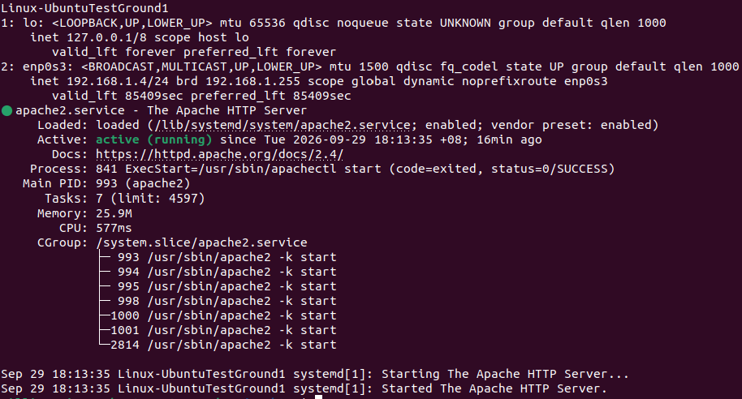
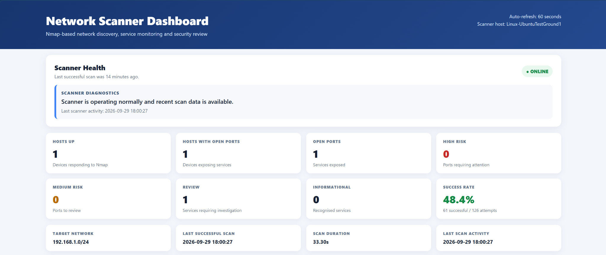
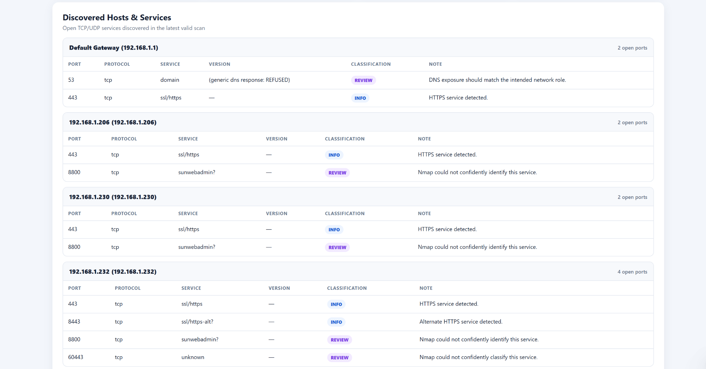
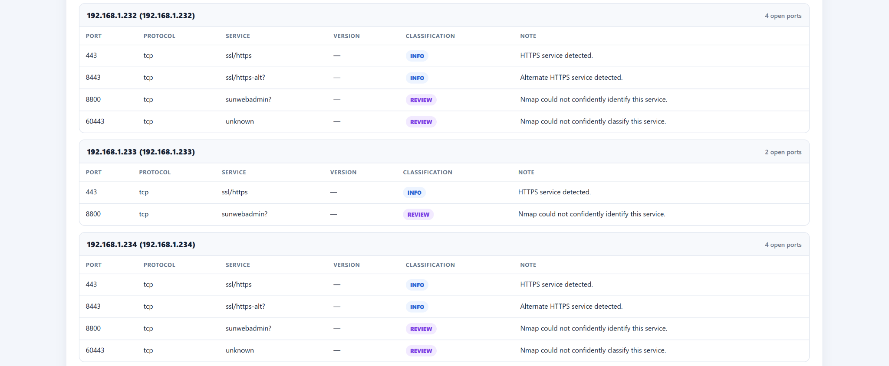
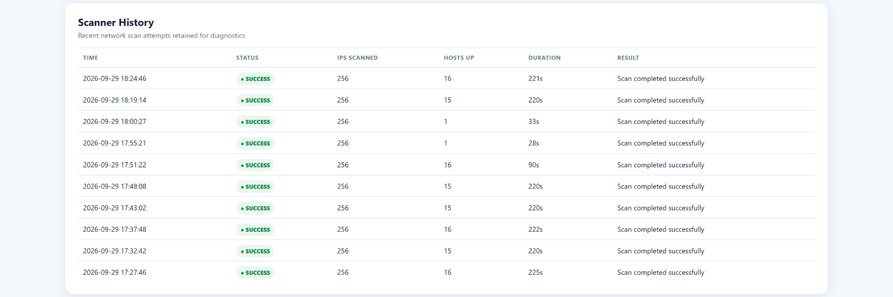
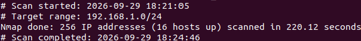

Linux
CLI administration · services · permissions · routing · Apache
LINUX / NETWORKING / CYBERSECURITY
A Linux-based network discovery and service-monitoring dashboard that turns scheduled Nmap scans into a readable operational view.
01 — THE PROJECT
This project was built as a controlled home-lab exercise to understand practical network discovery, service exposure and Linux automation. Nmap performs the discovery and service scan, a Bash script controls execution and preserves valid previous results, and a PHP dashboard presents the information through Apache.
The project is intentionally defensive and lab-focused: scanning should only be performed against networks and systems where you have explicit permission.
02 — ARCHITECTURE

systemd triggers the Bash scanner, which invokes Nmap against the configured lab network.
The script writes scan output and diagnostic information while protecting the last valid result from failed runs.
PHP parses the result and Apache serves a browser-based dashboard with history and service classification.
03 — PROJECT EVIDENCE
These screenshots show the dashboard, discovered services, security classification, scan history and the underlying Nmap execution workflow.





04 — AUTOMATION
The Bash scanner is designed to run repeatedly rather than relying on a manual terminal command. systemd handles scheduled execution, while the script records successful and failed attempts and preserves the previous valid scan when a new attempt fails.
This makes the project useful as a Cloud Support / DevOps learning exercise because the focus moves beyond “run Nmap” into service operation, error handling, observability and repeatability.
systemd timer → network_scan.sh → Nmap → scan_output.txt → network.php → Apache dashboard
05 — TROUBLESHOOTING
Nmap initially reported route/target errors and attempted scans could return no usable targets.
Checked the Linux interface, routing table, VM networking, scanner logs, Apache status and HTTP connectivity.
Corrected the VM networking configuration and validated the scanner and web application independently.
Apache returned HTTP 200 locally and over the VM's LAN address, while the scanner produced valid Nmap results.
06 — WHAT THIS DEMONSTRATES
CLI administration · services · permissions · routing · Apache
IPv4 · TCP ports · default gateway · LAN discovery · bridged VM networking
Bash scripting · systemd scheduling · repeatable execution · log handling
PHP parsing · Apache hosting · responsive dashboard presentation
Service exposure review · risky-port classification · defensive lab testing
Reproduce → inspect → isolate → fix → verify
07 — SOURCE
The portfolio includes the Bash scanner and PHP dashboard source used for this project.